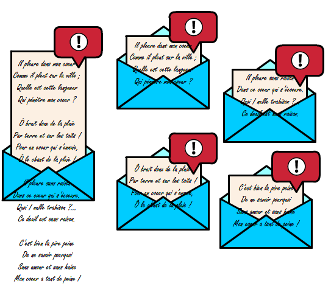
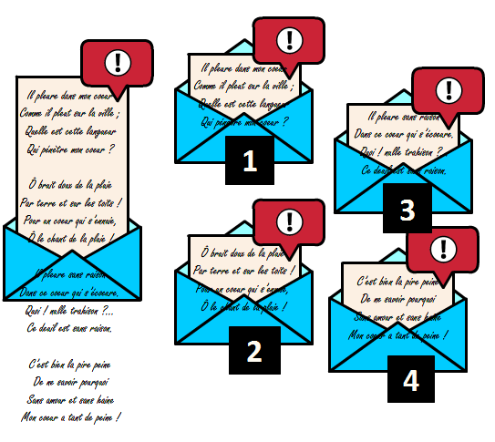
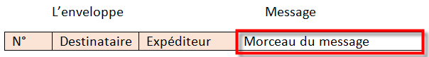
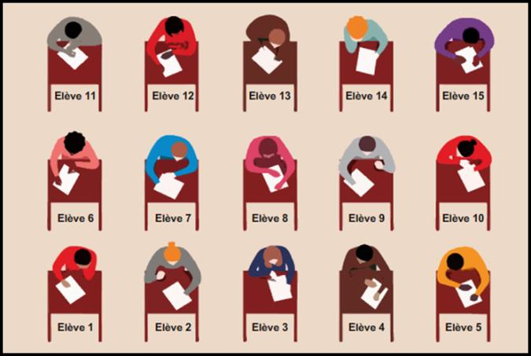
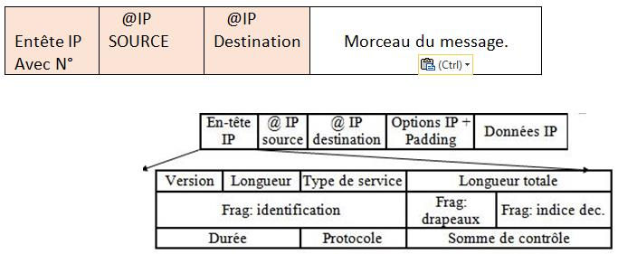

Echangez des grands messages
Le support montre plusieurs fois la même situation à mesure que l’activité progresse. Ici, elle est présentée une seule fois, puis complétée par les étapes nouvelles.
Un grand message devient plusieurs morceaux
Le message est maintenant inscrit sur une feuille au format A4, trop grande pour être placée dans l’enveloppe (sans la plier). Idée (ou suggestion) : découper la feuille en morceaux plus petits qui tiennent dans l’enveloppe.
On met chaque morceau dans une nouvelle enveloppe et on relance le processus avec comme consigne aux participants de transmettre les enveloppes le plus rapidement possible, en utilisant notamment les divers chemins redondants à disposition.

On fera vite le constat qu’à l’arrivée on reçoit un puzzle qu’il est difficile de reconstituer.
Comment reconstituer l’information ?
Comment aider le destinataire à reconstituer l’information ?
En numérotant les morceaux !


TCP, IP et MTU
Cette technique est utilisée par les protocoles TCP (création de segments...) et IP (fragmentation des paquets par certains routeurs) pour adapter les données aux capacités de transmission des réseaux physiques (MTU : Maximum Transmit Unit). Des champs spécifiques apparaissent dans les en-têtes IP et TCP.

